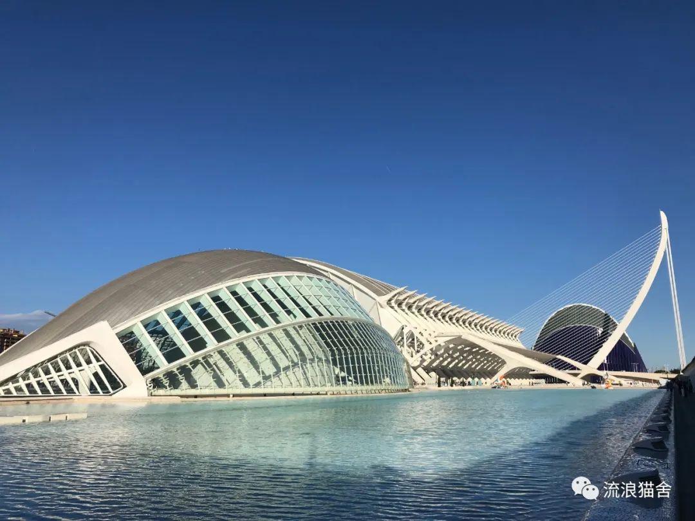
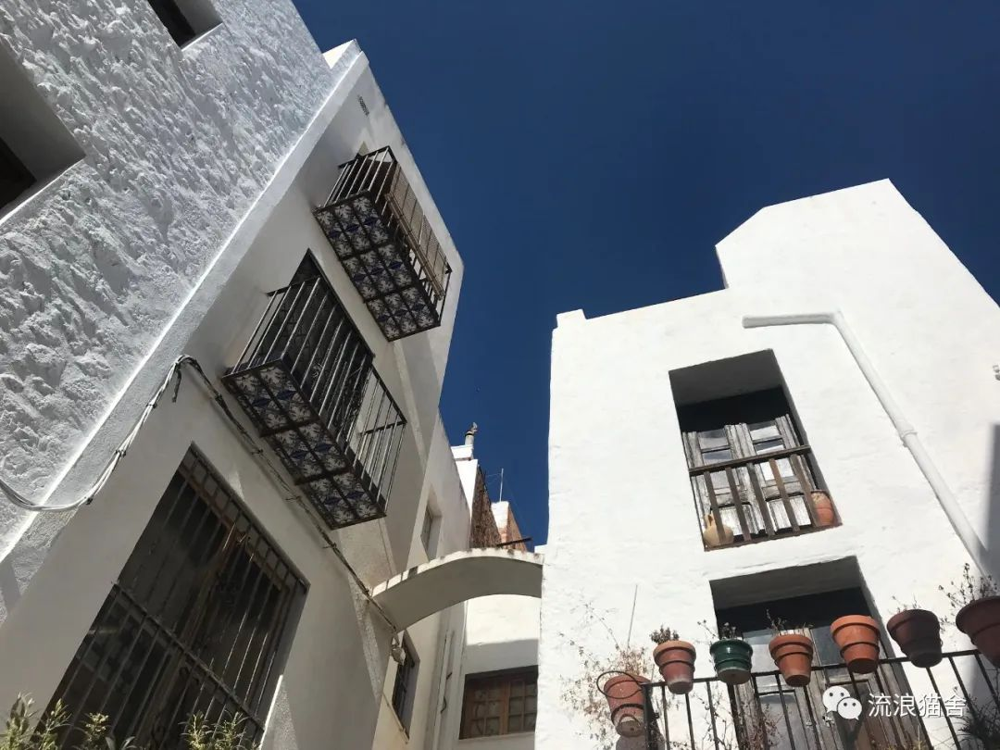
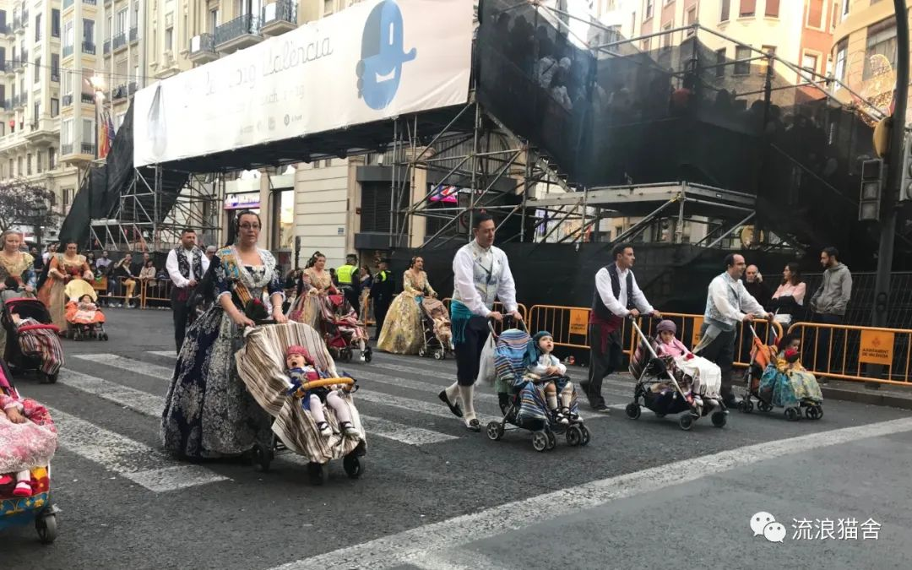

一日如此，三万六千日何有？
原文链接 备份链接 2020年2月25日。 农历二月初三。 武汉封城第三十四天。 天门封城第三十三天。 8点被婆婆喊起来，说出大太阳，赶紧把你被子换洗掉。果然一天都是好太阳，至晚上，竟淅沥沥落雨了。小方伯去社区帮忙，大方伯今天主厨，做了红 …
这篇文章是我的一个Facebook网友发的（类似于在朋友圈发了一条巨长无比的文字）。看文章时，我有好几个瞬间感觉作者似乎有读心术，作者仿佛把我想说的话用优美的英文表述了出来，它复刻了很多我去年在瓦伦西亚（西班牙）的感受和现在的心态，所以忍不住想分享出来。本来想附在我上一篇推文“宅”在意大利——撒丁岛疫情日记（1）后，但是文章很长，又字字珠玑，实在不舍得删太多。同时也想让更多人看明白这篇文章，所以我截取了大概三分之二，并简单翻译了一下。
并非翻译科班出身，很多地方我没有直译，如有问题欢迎大家批评指正。
原文在前，译文请向下拉。
Day one at home COVID 19.
In my few years in Spain I’ve barely seen an anxious face.
For the first time in my life (as a persistent worrier, over-thinker, rational optimist/ pessimist or whatever label you choose to define it as) I found a place where I was at peace with myself. Where the expression ‘no pasa nada’ really felt like a philosophy I needed and had been looking for, for my sanity and for my anxiety. It was the first time I realised feeling truly at home was a mentality, not a place.
Here is a place where the elderly sit together on benches soaking up the sun watching the world go by, seemingly worry free. Where children aren’t scorned for dropping a glass and run free and liberated in the streets and parks and parents don’t worry about them being abducted or falling out of a tree. There is a certain innocence, perhaps an absence of unnecessary worry that made me fall in love with Spain and in particular Valencia.

科学艺术城，瓦伦西亚。
Today It felt like I had woken up to a new world. Anxious eyes, an echo of a cough and people switch seats in the metro or move to the far end of the carriage. Wild and desperate panic stricken faces crammed the aisles of every supermarket in preparation for what appeared to be the apocalypse.
Fear transmits from one to another powerfully, perhaps more powerfully than positive emotions we radiate.
My point is fear is in the air here and around the world. There is panic spreading through society faster than the virus itself. Fear is what sells our news, is what keeps us buying, of dividing us, of not trying new things.
Here the empty streets and shuttered businesses and cafes bars and restaurants normally filled with laughter, family, early morning boozers and cigar smoke are eerily quiet and closed.
The ‘no pasa nada’ mentality becomes an impossibility when something so incomprehensible has taken place, because we don’t know what will pass. How worried we should be.
It’s 09:02 in my local mercadona supermarket, two minutes after opening time & there is a queue down the street. People impatiently stare at their phones , tapping feet and sighing, chain smoking, nervously listening out for a sniffle or cough, glaring at the door for it to open clutching their mass of shopping bags , many with medical gloves and face masks. Anxiety and desperation is in the air. I make it inside in hope of finding toilet roll but it seems that this is one of life’s great worries, what if I can’t wipe my ass.
My heart beats, hands sweat, brow creases & I back out of there feeling a panic attack building inside me, shortness of breath and dread overcome me. Also the realisation that this hysterical mass shopping is exactly what we should be avoiding. The air full of COVID 19 . Confined and lurking on packages, doorhandles, checkout tills , trolleys, bags, phones,switches. It occurs to me I need to be at home.
So I sit at home and I begin a list of things to achieve during this lock down:
-Clean the house .
After some breakfast and the rain forecast for the next week I decide this number one on the list can wait and I take my book to the port to soak up some sunshine and to try and forget abut the unfurling madness. I swiftly get moved on by an angry security guard who told me it’s irresponsible to be outside. There are people everywhere but perhaps my proximity to the port was his concern. I’m still unsure about this. But I finally decide, fuck it, I’m going home. Where I’m supposed to be right now.

瓦伦西亚大区：Peñiscola
So here I am, I’ve managed an hour without refreshing my COVID 19 stats website, which is impressive given my addiction to seeing the inevitably growing figures. And I’ve managed to restore a sense of calm in my soul. Writing this has been the most therapeutic thing since this began，
For anyone who knows me I’ve always enjoyed a dose of self-isolation. I could quite happily go a weekend or perhaps a week without seeing a solitary soul. The trouble is I can’t stand being stuck in the house. Climbing a mountain or exploring a pueblo it would be different but the reality is I am going to be here alone. I am enjoying this day one of isolation but perhaps this will evolve as the days roll on.
So I think its important to focus on the benefits of this situation.
-We are all being made to re-evaluate the way we live
-To learn the spirit of community / (or not) as toilet roll hoarders are doing in supermarkets across the world
-To reach out to loved ones, to tell it like it is.
-To get things off my chest I’ve been carrying for so long. Things that have weighed heavily upon me
-To be grateful for what we have and to share it if someone else is in need
-To take responsibility for ourselves but also to take responsibility collectively to stop the spread of this virus.
-To achieve and improve the things we would have done had we been given this time at any other point in life
-To face ourselves. And this thought perhaps terrifies me the most but perhaps its something I should have done a long time ago .
-We start to take care of our planet.
-We laugh more, love more, appreciate what we have.
-We realise how fragile and blessed we are to have the gift of life.
-To help strangers
The strangest part of this all here in Valencia is this week should be the noisiest , liveliest, joyous, week in the Valencian calendar. Where fireworks begin before sunrise and continue incessantly for the month. It’s not for everyone but its magical and should be on your bucket-list.
For anyone who hasn’t experienced las fallas festival it is characterised by a collective joy, a tradition spanning decades that is beautifully chaotic, the city descends into a wonderful madness that is unlike anything I’ve ever experienced.

堪比楼高的“法雅”。
So to the children of Valencia Las fallas is like Christmas, in fact it is a thousand times better. The streets are full of huge sculptures, churros and laughter. Music bellows from every barrio and the bars and restaurants are teeming with people of every nationality. It is their pride and joy, their heritage, their very own holiday. As I work with children this week has been an incredibly emotionally draining time as their Christmas cancelled and schools closed and uncertainty grows, it has been tearful and has put out the sparkle in their eyes. Not even the mass of sweets I produced could change the fact that history had been changed here forever. The statues remain in the streets in many barrios, and are a constant reminder of their lost holiday and perhaps more depressingly a constant reminder of the ensuing chaos, of the world as we know it ending. Of a new era of uncertainty.

法雅节：节日游行要从娃娃培养。
Many Valencians mortified at the festival being postponed and many quietly relieved that they won’t have to endure a month of fireworks. The dogs perhaps the most relieved sleeping soundly on the sofa rather than scratching at the walls trying to escape the inexplicable barrage of gunpowder.
We are the collective creator of our own agony. It is time for a re-awakening of consciousness when we recognize the best in ourselves and overcome the worst.
Lets stick together
Fight this thing
Reconnect
Support friends families and strangers.
译文
我在西班牙的这几年，极少见到焦虑的神情。
我，无论作为一个长期忧虑者、过虑者、理性乐观主义或悲观主义者，抑或其他可以定义我的标签，第一次找到了一个灵魂自洽的地方。在这里，no pasa nada（西班牙语：没关系），真的像是我需要并且追寻的一种生活哲学。我第一次真正意识到，“在家里”是一种心态，而非地点。
在这里，老人们在长椅上排排坐，无忧无虑地沐浴在阳光下看尘世流转；在这里，孩子们不会因弄掉玻璃杯而被责备，孩子们可以在街道和公园自由奔跑，家长不必担心孩子被拐骗或从树上掉下。这里有笃定的善良、没有不必要的担忧，正是这些，让我爱上了西班牙，尤其是瓦伦西亚。

瓦伦西亚大区：橙花海岸。
今天，我仿佛在一个新世界醒来。焦虑的眼神、回荡着的咳嗽声、地铁上人们为了挪到车厢一边而变换着位置。为迎接末日，野蛮、绝望、恐惧、扭曲的脸塞满了每个超市的过道，
恐惧，强有力地“人传人”，或许它比积极的情绪更具有传播力。
全世界都弥漫着恐惧，它比病毒本身传播得更快。恐惧，制造着新闻，刺激着停不下来的购买欲；恐惧，使我们彼此分离、放弃尝试新事物。
想想曾经充满欢声笑语的店铺，再看看现在空荡荡的街道和停业的餐厅酒吧，便更有一种诡异的安静与萧瑟感。
当一些不可思议的事情发生时，no pasa nada的心态就不起作用了。因为我们不知道未来将发生什么、我们需要多紧张。
09:02，在我家附近的mercadona（西班牙一家连锁超市的品牌），营业时间开始两分钟后，就有一条排到街上的队。人们不安地盯着手机、跺着脚、叹着气、吸着烟、紧张兮兮地听着吸鼻子和咳嗽的声音、盯着门、蓄势待发准备打开购物袋、带着医用手套和口罩，空气中尽是焦灼与绝望。我进入超市寄希望于找到厕纸，但似乎“不能擦屁股”成了人们现在最大的担忧。
我的心脏砰砰跳、手心出汗、眉头皱起、呼吸急促，好像我的体内有压制不下去的恐慌感。同时我也意识到，这样的疯狂抢购正是我们应该避免的。空气中都是新冠病毒，它在包裹上、门把手上、收银台上、手推车上、电话上、开关上……我觉得我需要回家。
所以，我坐在家，准备列一个宅家期间需要达成的事情清单。
首先，做清洁。
早饭后我看了下天气预报，下周有雨。所以清单上第一条可以放一放了。于是我决定拿着书，去码头，晒一晒书，也试着去忘掉这些烂事儿。很快，一个生气的保安就告诉我这样跑到外边不负责。我想，哪儿都有人，可能他只是担心我离码头太近了吧。我不知道我理解得对不对，但最后我决定，拉倒吧，我回家，回到我本应该呆的地方。
就这样，我回到家，控制着自己一个小时不刷新新冠病毒统计数据的网站，势不可挡的增长数字真是让我欲罢不能。现在我逐渐恢复了平静，写这些东西成为了最治愈的事情。
认识我的人都知道，我很享受独处的时光。一个周末、甚至一个星期不跟一个大活人见面，我都能开心地度过，但问题是我不能憋在家里。爬山或探索一个pueblo（西班牙语：村庄）都没问题，但现实是，我将一个人呆在家里。现在，我蛮享受这种隔离，但随着时间的推移，这种感觉或许会改变吧。
所以我想，我应该专注于现阶段的独特优势。
清单继续。
-我们要重新评估自己的生活方式。
-去学习团体精神，或者说，不要像全世界超市里那些厕纸的囤积癖一样。
-去爱、去表达。
-卸下生命中的负担。
-感恩我们所获得之物、如有需要，分享之。
-阻止病毒的传播，是对我们自己负责、也是对我们的群体负责。
-把我们本可以学习或提高的事情做好。
-直面自我。这可能是最令我害怕的一点，但也是我很早以前就应该思考的东西。
-要开始关爱我们的星球。
-去笑、去爱、去欣赏我们当下。
-去明白生命的馈赠是多么脆弱与珍贵。
-去帮助陌生人。
在瓦伦西亚，最奇怪的事情莫过于，在瓦伦西亚的“历法”中，这周本应该热闹至极、欢乐至极。烟火与炮竹的声光，在这一个月内，早于黎明，不停不息。虽然不是每个人都可以看到这个盛况，但这绝对应该出现在你这辈子的必做清单上，它真的太梦幻了。对于没有经历过las Fallas（法雅节）的人来说，你们可能无法想象那种全民狂欢的氛围与对几十年袭承下来的喧闹的传统的保护。法雅节期间，整个城市处于一种美妙的疯狂中，这种经历真是无与伦比。

在西班牙，轮椅游行，拄拐蹦迪的选手都有。
对于孩子们来说，法雅节就像是圣诞节，实际上，它比圣诞节好千百倍。音乐声从每个街区流溢出来，酒吧与餐厅里涌动着来自世界各地的人。法雅节是这里的骄傲与荣耀、是这里的传统、是这里独特的节日。这周，对于跟孩子们工作的我来说，真是劳时伤神。孩子们的“圣诞节”取消了、学校停课了、不确定的事物与日俱增，这些都让孩子们的眼里闪着泪花。无论怎样，这一页历史被永远地改变了。法雅雕塑还停留在很多街区与街道，似乎不断地提醒着人们，你们失去了这一盛会，你们失去了那些本应该属于这个节日的喧嚣，也警醒着人们，一个充满未知的新时代即将到来。

法雅节最震撼的地方就是，这些可爱美好的事物，会在节日的最后一天付之一炬。自此，春天到来。
许多瓦伦西亚人为节日的推迟感到哀伤，也有很多人松了一口气，因为终于可以摆脱一个月不间断的烟花爆竹声了。狗狗或许是这一改变的最大受益者，他们终于不用挠着墙、试图逃离这大得离谱的炮竹声，他们终于可以窝在沙发上睡个好觉了。
我们共同孕育着我们的不幸。是时候觉醒了，去认识最好的我们，去战胜最糟糕的一隅。
并肩战斗，支持我们的亲友与陌生人。

关注它，也关注世界。
刚刚翻译完，发现这位网友又出了一篇日记，依然是巨长无比，但是文字依旧非常动人，我应该是翻译不动了。但这种书写方式也给了我很多灵感，相比于关注数据，更多地去观照内心，可能，这样的写作方式更加治愈。
那么还有一个严肃的问题：这样涉不涉及侵权？
原创与打赏都没开，希望非盈利的行为不涉及侵权，如涉及，我会删掉。
感谢网友笔耕不辍，给我更多的记录生活的动力。
原文链接 备份链接 2020年2月25日。 农历二月初三。 武汉封城第三十四天。 天门封城第三十三天。 8点被婆婆喊起来，说出大太阳，赶紧把你被子换洗掉。果然一天都是好太阳，至晚上，竟淅沥沥落雨了。小方伯去社区帮忙，大方伯今天主厨，做了红 …
原文链接 备份链接 Organization: Internet Archive The Internet Archive discovers and captures web pages through many different …
原文链接 备份链接 利用中国的疫情防控经验，帮助其他疫情受灾国度过难关，同时强化未来的合作机会。在这个时候，帮助其他国家其实也等于帮助中国自己 巴基斯坦新政府上台以来，中巴经济走廊的发展前景开始处于一个较为不确定的状态。图/IC 文 | …
原文链接 备份链接 口述 ：Johnny 采访、文 ：杨溪 “ 我们的目的和初衷是希望在安全的情况下，尽可能保留医护人员漂亮的一面。很多医护人员中途就又打电话联系我，说上次头发剪完了想再修一修，我就回去再帮他们重新设计，修剪一下。他们说已 …
原文链接 备份链接 居家隔离标准升级，集中隔离住宿费自理，原则上有200元、400元两档 文 |《财经》记者 陈亮 王静仪 李皙寅 编辑 | 施智梁 作为中国最重要的国际大都市之一，上海正面临第二波防疫考验——严防境外输入。 3月17日下 …